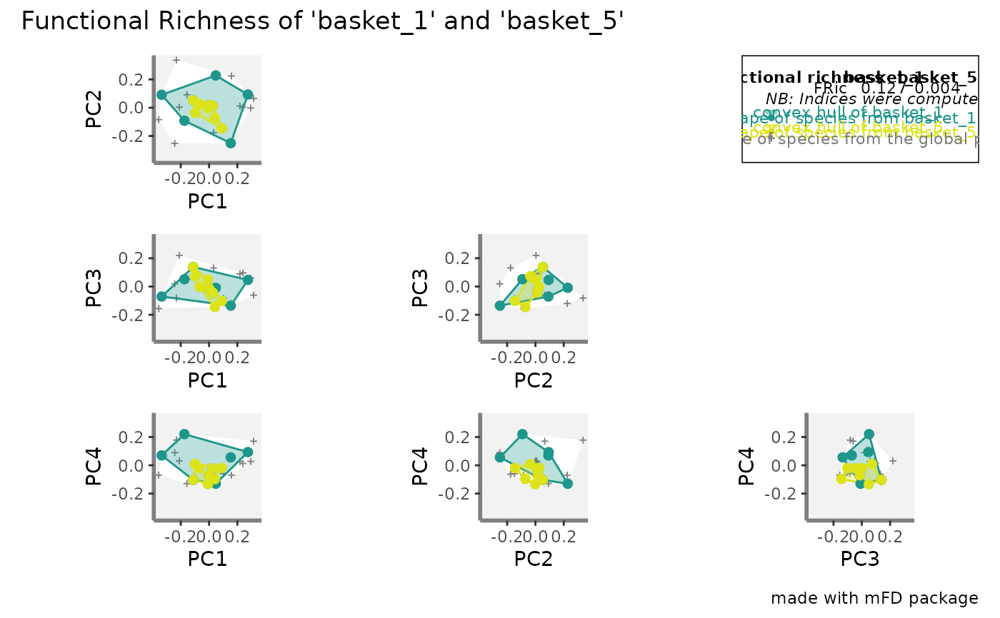

R/plot_alpha_indices.R
alpha.multidim.plot.RdCompute a graphical representation of functional indices. To plot
functional indices, functional indices values must have been retrieve
through the use of the alpha.fd.multidim function.
alpha.multidim.plot( output_alpha_fd_multidim, plot_asb_nm, ind_nm = c("fide", "fric", "fdiv", "fdis", "feve", "fori", "fspe", "fnnd"), faxes = NULL, faxes_nm = NULL, range_faxes = c(NA, NA), color_bg = "grey95", shape_sp = c(pool = 3, asb1 = 21, asb2 = 21), size_sp = c(pool = 0.7, asb1 = 1, asb2 = 1), color_sp = c(pool = "grey50", asb1 = "#0072B2", asb2 = "#D55E00"), color_vert = c(pool = "grey50", asb1 = "#0072B2", asb2 = "#D55E00"), fill_sp = c(pool = NA, asb1 = "#FFFFFF30", asb2 = "#FFFFFF30"), fill_vert = c(pool = NA, asb1 = "#0072B2", asb2 = "#D55E00"), color_ch = c(pool = NA, asb1 = "#0072B2", asb2 = "#D55E00"), fill_ch = c(pool = "white", asb1 = "#0072B2", asb2 = "#D55E00"), alpha_ch = c(pool = 1, asb1 = 0.3, asb2 = 0.3), shape_centroid_fdis = c(asb1 = 22, asb2 = 22), shape_centroid_fdiv = c(asb1 = 24, asb2 = 25), shape_centroid_fspe = 23, color_centroid_fspe = "black", size_sp_nm = 3, color_sp_nm = "black", plot_sp_nm = NULL, fontface_sp_nm = "plain", save_file = FALSE, check_input = TRUE )
| output_alpha_fd_multidim | a list of objects retrieved through the
|
|---|---|
| plot_asb_nm | a vector containing name(s) of assemblage(s) to plot. |
| ind_nm | a vector of character string of the name of functional indices to plot. Indices names must be written in lower case letters. Possible indices to compute are: "fdis", "feve", "fric", "fdiv", "fori" and "fspe". Default: all the indices are computed. |
| faxes | a vector with names of axes to plot. You can only plot from 2 to 4 axes for graphical reasons: vector length should be between 2 and 4. Default: faxes = NULL (the four first axes will be plotted). |
| faxes_nm | a vector with axes labels if the user want different axes
labels than |
| range_faxes | a vector with minimum and maximum for values for axes. Note that to have a fair representation of position of species in all plots, all axes must have the same range. Default: faxes_lim = c(NA, NA) (the range is computed according to the range of values among all axes, all axes having the same range). |
| color_bg | a R color name or an hexadecimal code used to fill plot
background. Default: |
| shape_sp | a vector gathering numeric values referring to the symbol used to draw species from the global pool and the plotted assemblage(s). It should be written as c(pool = "...", asb1 = "...", ...). (0 = high transparency, 1 = no transparency). |
| size_sp | a vector gathering numeric values referring to the size of species belonging to the global pool and the plotted assemblage(s). It should be written as c(pool = "...", asb1 = "...", ...). |
| color_sp | a vector gathering R color names or hexadecimal codes referring to the color of species from the global pool and studied assemblage(s). It should be written as c(pool = "...", asb1 = "...", ...). |
| color_vert | a vector gathering R color names or hexadecimal codes referring to the color of vertices from the global pool and studied assemblage(s). It should be written as c(pool = "...", asb1 = "...", ...). |
| fill_sp | a vector gathering R color names or hexadecimal codes referring to the filled color of species from the global pool and studied assemblage(s). It should be written as c(pool = "...", asb1 = "...", ...). |
| fill_vert | a vector gathering R color names or hexadecimal codes referring to the filled color of vertices from the global pool and studied assemblage(s). It should be written as c(pool = "...", asb1 = "...", ...). |
| color_ch | a vector gathering R color names or hexadecimal codes referring to the color of the convex pool of the global pool and studied assemblage(s). It should be written as c(pool = "...", asb1 = "...", ...). |
| fill_ch | a vector gathering R color names or hexadecimal codes referring to the color to fill the convex pool of the global pool and studied assemblage(s). It should be written as c(pool = "...", asb1 = "...", ...). |
| alpha_ch | a vector gathering numeric values referring to the opacity of convex hulls of the global pool and the plotted assemblage(s). It should be written as c(pool = "...", asb1 = "...", ...). (0 = high transparency, 1 = no transparency). |
| shape_centroid_fdis | a vector gathering numeric value(s) used to draw FDis centroid size. |
| shape_centroid_fdiv | a vector gathering numeric value(s) used to draw FDiv centroid size. |
| shape_centroid_fspe | a vector gathering numeric value used to draw FSpe centroid (i.e. center of the functional space) size. |
| color_centroid_fspe | a vector gathering R color name or hexadecimal code used to draw FSpe centroid (i.e. center of the functional space) color. |
| size_sp_nm | a numeric value referring to the size of species names if plotted. |
| color_sp_nm | a R color name or hexadecimal code referring to the color of names of species if plotted. |
| plot_sp_nm | a vector containing species names that are to be plotted.
Default: |
| fontface_sp_nm | a character string for font of species labels (e.g.
"italic", "bold"). Default: |
| save_file | a logical value telling if plots should be locally saved or not. |
| check_input | a logical value indicating whether key features the
inputs are checked (e.g. class and/or mode of objects, names of rows
and/or columns, missing values). If an error is detected, a detailed
message is returned. Default: |
If name_file is NULL, it returns a list of one
ggplot2 plots per functional index containing plots for combinations
of up to four axes, a patchwork figure gathering all combinations of
axes and a ggplot2 figure showing the plot caption. If
name_file is not NULL, then those plots are saved locally.
Camille Magneville and Sebastien Villeger
# Load Species*Traits dataframe: data("fruits_traits", package = "mFD") # Load Assemblages*Species dataframe: data("baskets_fruits_weights", package = "mFD") # Load Traits categories dataframe: data("fruits_traits_cat", package = "mFD") # Compute functional distance sp_dist_fruits <- mFD::funct.dist(sp_tr = fruits_traits, tr_cat = fruits_traits_cat, metric = "gower", scale_euclid = "scale_center", ordinal_var = "classic", weight_type = "equal", stop_if_NA = TRUE) #> [1] "Running w.type=equal on groups=c(Size)" #> [1] "Running w.type=equal on groups=c(Plant)" #> [1] "Running w.type=equal on groups=c(Climate)" #> [1] "Running w.type=equal on groups=c(Seed)" #> [1] "Running w.type=equal on groups=c(Sugar)" #> [1] "Running w.type=equal on groups=c(Use,Use,Use)" # Compute functional spaces quality to retrieve species coordinates matrix: fspaces_quality_fruits <- mFD::quality.fspaces(sp_dist = sp_dist_fruits, maxdim_pcoa = 10, deviation_weighting = "absolute", fdist_scaling = FALSE, fdendro = "average") # Retrieve species coordinates matrix: sp_faxes_coord_fruits <- fspaces_quality_fruits$details_fspaces$sp_pc_coord # Compute alpha diversity indices: alpha_fd_indices_fruits <- mFD::alpha.fd.multidim( sp_faxes_coord = sp_faxes_coord_fruits[, c("PC1", "PC2", "PC3", "PC4")], asb_sp_w = baskets_fruits_weights, ind_vect = c("fdis", "fmpd", "fnnd", "feve", "fric", "fdiv", "fori", "fspe"), scaling = TRUE, check_input = TRUE, details_returned = TRUE) #> [1] "basket_1 done 10%" #> [1] "basket_2 done 20%" #> [1] "basket_3 done 30%" #> [1] "basket_4 done 40%" #> [1] "basket_5 done 50%" #> [1] "basket_6 done 60%" #> [1] "basket_7 done 70%" #> [1] "basket_8 done 80%" #> [1] "basket_9 done 90%" #> [1] "basket_10 done 100%" # Plot all fd alpha indices: plots_alpha <- mFD::alpha.multidim.plot( output_alpha_fd_multidim = alpha_fd_indices_fruits, plot_asb_nm = c("basket_1", "basket_5"), ind_nm = c("fdis", "fide", "fnnd", "feve", "fric", "fdiv", "fori", "fspe"), faxes = NULL, faxes_nm = NULL, range_faxes = c(NA, NA), color_bg = "grey95", shape_sp = c(pool = 3, asb1 = 21, asb2 = 21), size_sp = c(pool = 0.7, asb1 = 1, asb2 = 1), color_sp = c(pool = "grey50", asb1 = "#1F968BFF", asb2 = "#DCE319FF"), color_vert = c(pool = "grey50", asb1 = "#1F968BFF", asb2 = "#DCE319FF"), fill_sp = c(pool = NA, asb1 = "#1F968BFF", asb2 = "#DCE319FF"), fill_vert = c(pool = NA, asb1 = "#1F968BFF", asb2 = "#DCE319FF"), color_ch = c(pool = NA, asb1 = "#1F968BFF", asb2 = "#DCE319FF"), fill_ch = c(pool = "white", asb1 = "#1F968BFF", asb2 = "#DCE319FF"), alpha_ch = c(pool = 1, asb1 = 0.3, asb2 = 0.3), shape_centroid_fdis = c(asb1 = 22, asb2 = 24), shape_centroid_fdiv = c(asb1 = 22, asb2 = 24), shape_centroid_fspe = 23, color_centroid_fspe = "black", size_sp_nm = 3, color_sp_nm = "black", plot_sp_nm = NULL, fontface_sp_nm = "plain", save_file = FALSE, check_input = TRUE) # Check FRic plot: plots_alpha$fric$patchwork 